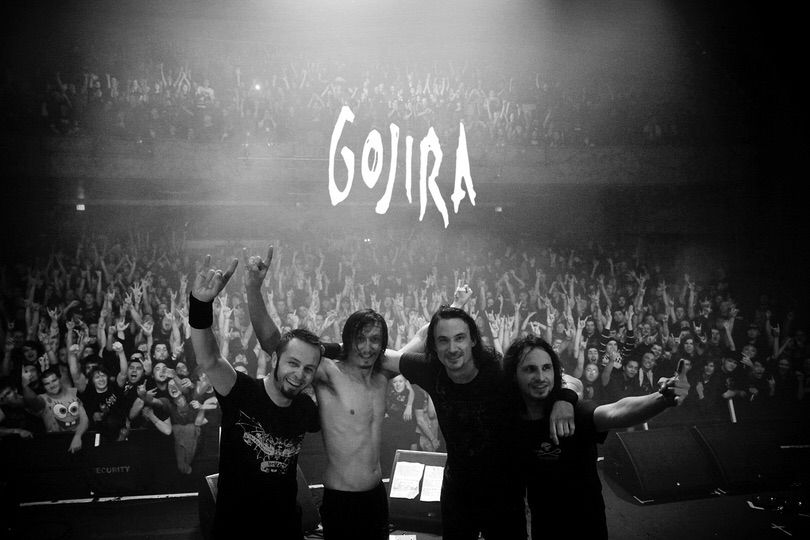

Joseph Duplantier - vocals, guitar (1996-)
Mario Duplantier - drums (1996-)
Christian Andreu - guitar (1996-)
Jean-Michel Labadie - basso (2001-)
Alexandre Cornillon - bass (1996-2001)
Gojira is a French heavy metal band from Ondres. Founded as Godzilla in 1996, the band's lineup—brothers Joe (lead vocals, rhythm guitar) and Mario Duplantier (drums), Christian Andreu (lead guitar), and Jean-Michel Labadie (bass)—has been the same since the band changed its name to Gojira in 2001.
Gojira has been known for their progressive and technical death metal styles and their spiritual and environmentally-themed lyrics. The band has gone "from the utmost obscurity during the first half of their career to widespread global recognition in the second".

Gojira's first two albums, Terra Incognita (2001) and The Link (2003), and powerful live performances established their reputation as a leading French metal band. Maciste All'Inferno was a silent film score composed and performed for a one-night show in Bordeaux.
Their third album, the critically acclaimed From Mars to Sirius (2005) with "Backbone", "The Heaviest Matter of the Universe", and "Flying Whales", was covered in the British metal press. The band then signed with Prosthetic Records, which gave them visibility in North America.